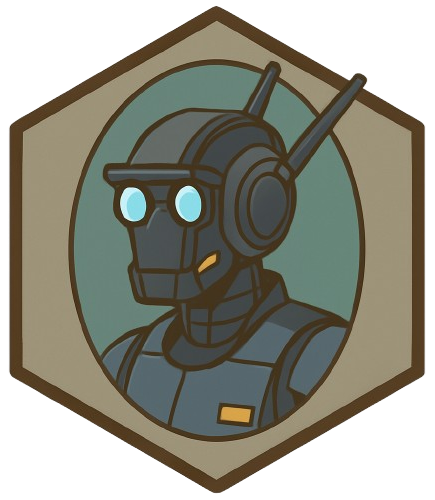

PROJECT
ChappieVC
- Version
- 0.1.0-alpha
- Status
- INTERNAL – Not for public distribution
- Platforms
- Linux · Windows · macOS
- Native
- PyTorch · Torchaudio · PyQt5 · FFmpeg · PyAudio · sounddevice · Mido

ZZX-LABS R&D // SOFTWARE // WEB MIRROR
INTERNAL real-time robot/mech/droid voice-effects workbench using browser microphone/file audio, vocoder-like filtering, ring modulation, distortion, delay, glitch gating, spectrum visualization, and preset control.
INTERNAL // ROBOTIC VOICE FX
Optional Web MIDI mapping for hardware controllers. MIDI values can be mapped to filter, ring-mod frequency, delay, and wet mix.
PROJECT
WEB BASELINE
Web Audio supplies a real-time robotic effects chain. Neural pitch/formant models remain native-side and are not represented as browser parity.